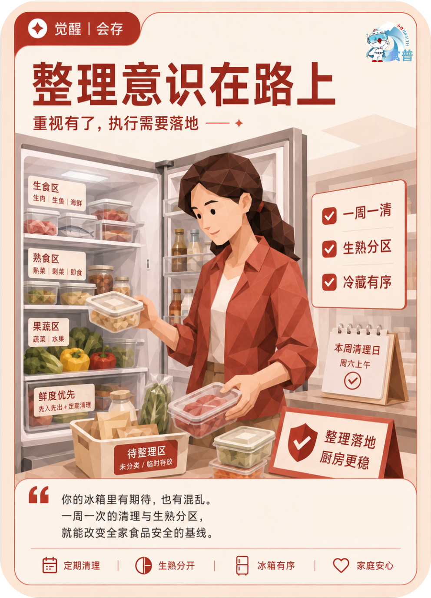

健康主理人
觉醒
会存
F12
整理意识在路上
重视有了,执行需要落地
你的冰箱里有期待,也有混乱。一周一次的清理与生熟分区,就能改变全家食品安全的基线。
手机端可点击“打开原图”后长按图片保存；也可以直接长按上方图卡保存。

重视有了,执行需要落地
你的冰箱里有期待,也有混乱。一周一次的清理与生熟分区,就能改变全家食品安全的基线。
手机端可点击“打开原图”后长按图片保存；也可以直接长按上方图卡保存。